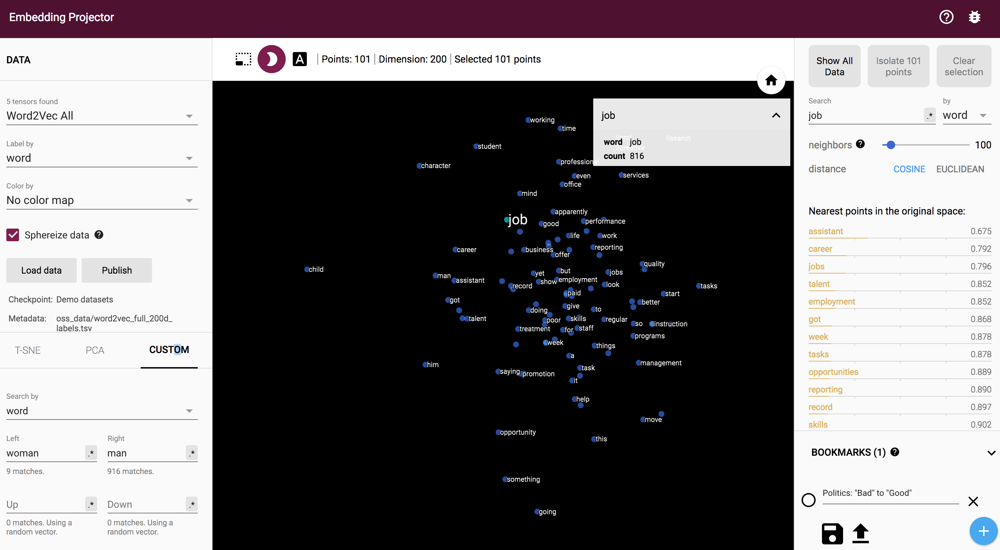
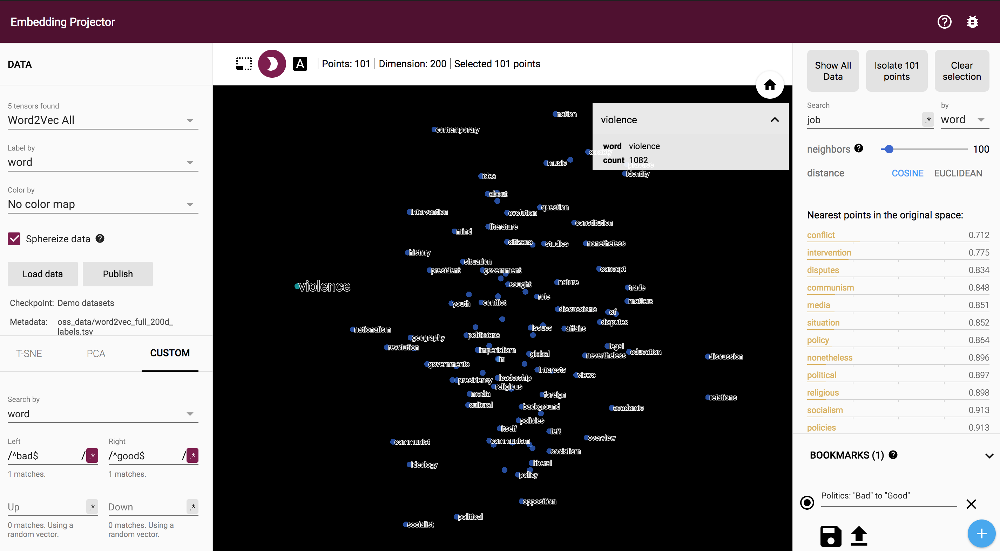
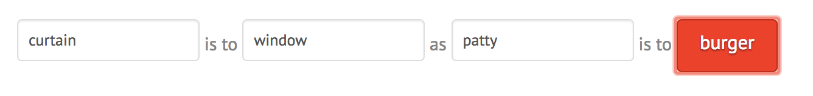
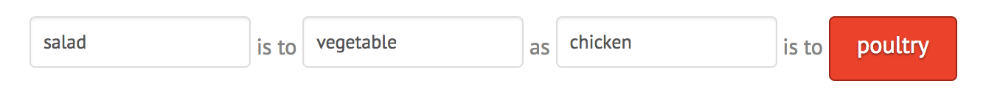
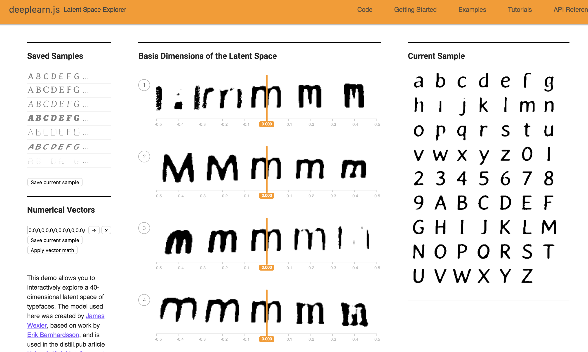
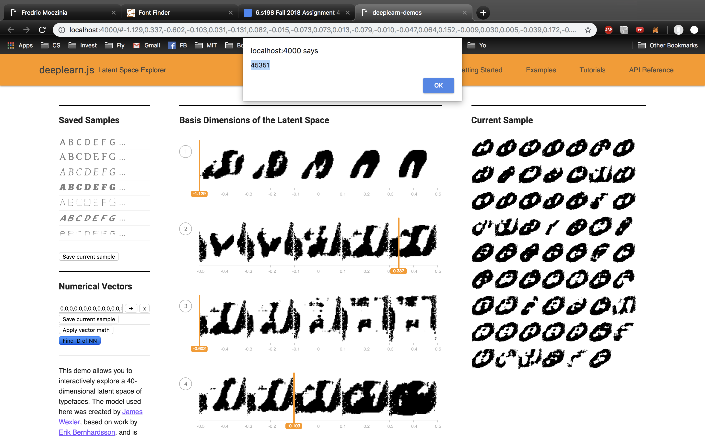
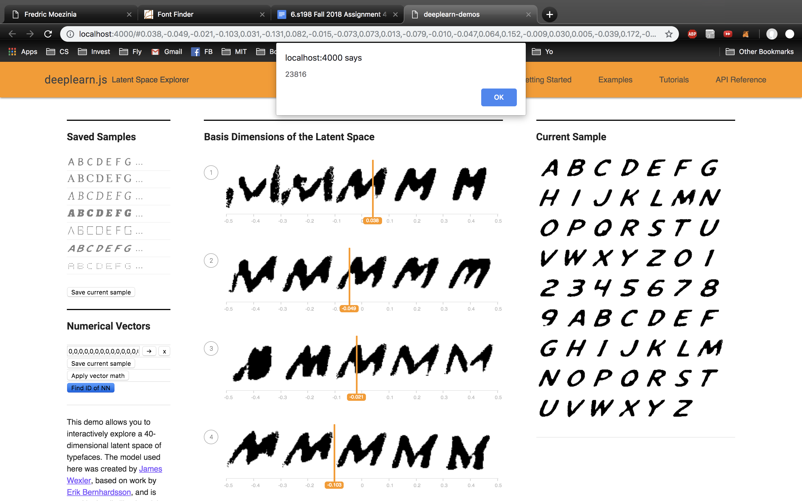
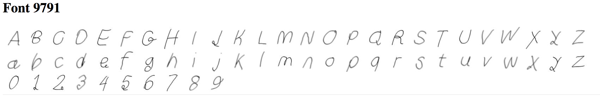
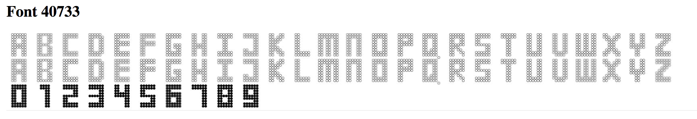

The embedding projector does a really good job of separating MNIST images into distinct clouds. What is also interesting is that if we separate (for example 4s to the left and 2s to the right), we end up getting a distinct cloud of OTHER numbers as well. In this cloud, the 1s are clustered in the middle, however some other numbers are not at all. Perhaps this is indicative of certain attributes of the 1 which are similar to that of 2 and 4. However, when we cluster by 1 and 8, the 7s are not clustered together despite their similarity to the number 1. Also, the clustering does not do a good job of clustering certain digits like 8.
I tried to research the different words embedded along a certain dimension, for example good to bad or male to female. With only 10K words, I don't really see any interesting trends or patterns. When I isolate the word job along man to woman, I still don't get a clear pattern however words like assistant are towards the woman side, where as construction and management are closer to the man side.
The politics search is really interesting, as it clearly detects violence and nationalism and intervention on the bad side and things like discussion, relations and education on the good side! This is very cool. Althugh there are on the order of 10K words in the English Dictionary, perhaps 10K words is not enough to form a precise model of the English language which is why results work a lot better with Word2Vec All.
A few cool examples I got here:
And here
1) The PCA embedding straight off the bat clusters As and Hs (perhaps incorrectly lablled?) together because of their similarity. Similar font types like italics are also clustered together. I am looking at a bold A (id 4861)
2) After running T-SNE for 100 iterations, the embedded results are not very interesting. After 550, they do begin to group. I am looking at an interesting A with id 3216.
3) ID 3216. Using cosine distance, Neighbours: 3207, 3217, 3211, 3212, 3215, 1117, 5158
ID 1599 has 4751, 6118, 3764, 3765, 2049, 4201, 4202.
ID 4861 has 4880, 4875, 4879, 4871, 4890, 4870, 4889.
ID 6145 has no similar neighbours.
0) m is the new displayed character.
1) After implementing KNN, I played with the nearest neighbour answers and a weird one was font ID 45351! Shown Below. Here is a screenshot of the ~normal~ nearest neighbour font ID being shown to the user!
Here is a screenshot of the ~normal~ nearest neighbour font ID being shown to the user!
2) Code linked below in 6).
3a) Apply vector math with this bolding vector makes the current font a little bolder. It mainly thickens the font. However, I tried this with a different interesting font, (with id 26185) and the idiosyncracies did not carry over when applying the latent vector.
3b) First, I found similar fonts. An example of the font is shown below (id 9791). The fonts are very lightly drawn with thin lines. I found 9 other similar fonts, and found the average latent vector using my findFontSetAvf() and the embeddings.json. Then I tried manually adding this vector to two different fonts; the first was a strong bold font like in part 3b, and this addition did almost nothing to change its appearance. I did this purposefully; then I tried to add it to a lighter font. Again, there was not much change apart from some of the numbers picked up the curly attribute which was interesting.
Then I tried the same technique on fonts similar to the one below. There were a few interesting fonts which had very different shades of numbers vs letters. After applying the average vector to lighter fonts, I noticed that they also picked up this dichotomy.
3c) I used the two same style attributes as in 3b. First, I looked at removing this very light attribute from a stronger font. Again, the results were nondescript. However, applying this new method to the second attribute used in part 3b), I found that the method worked even better at accentuating the attribute. This method worked better to attain the desired characteristics. Again, I used my findFontSetAvf function to do this.
4) I found font 2747 which consisted of solely uppercase letters. When applying this vector add directly to the current sample, some of the lower case letters became uppercase! This was really cool as it shows that capitalization is somewhat captured in the latent attributes. Intuitively, subtracting this latent vector from upper cases could uncapitalize them, however this did not work. Then, I tried to manually find a vector to do this, and this method worked better. Perhaps the characteristics of the lower case letters are lost in all caps fonts and therefore subtracting would not do much to achieve this goal.
5) The vector below was interesting to me. [0.10828740149736404, 0.03160903975367546, -0.06944252550601959, -0.2783111035823822, 0.0704488530755043, 0.11686120927333832, -0.14073002338409424, -0.040903542190790176, -0.04826802387833595, 0.05281464010477066, -0.12212065607309341, -0.004985148087143898, -0.18675099313259125, -0.0853152796626091, -0.038266297429800034, 0.23261873424053192, 0.26054954528808594, 0.11330515146255493, 0.01756417751312256, 0.07529422640800476, 0.09018354117870331, 0.31678473949432373, 0.09022020548582077, 0.030000761151313782, -0.2911940813064575, -0.1260436624288559, -0.07648079842329025, 0.003348581027239561, -0.1365237683057785, 0.03533805534243584, 0.005030472297221422, 0.2664680778980255, 0.025348030030727386, -0.02433599904179573, -0.06315751373767853, -0.24414566159248352, -0.08298163115978241, 0.2372572124004364, 0.09826207906007767, -0.07238144427537918] It managed to take the alphanumerics and make them uncreognizable. Some letters such as X were even almost completely removed as well. This was a personal favourite font.